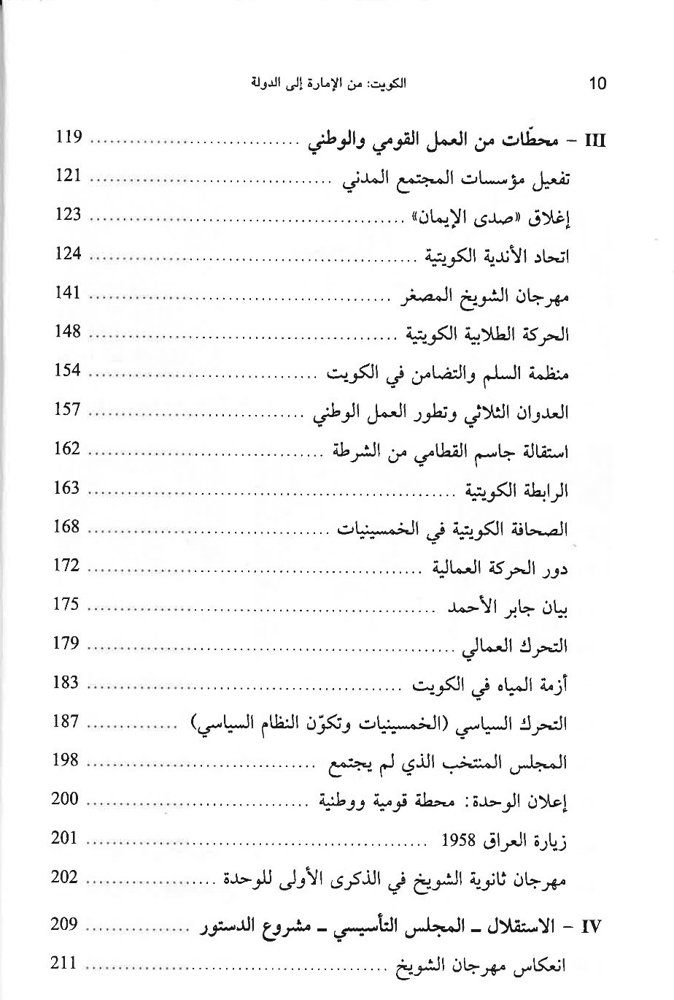

مذكرات، الطبعة الثانية · صفحات من كتاب د. أحمد الخطيب، الكويت من الإمارة إلى الدولة: ذكريات العمل الوطني والقومي، تحرير د. غانم النجار، المركز الثقافي العربي، الطبعة الثانية
مذكرات د. أحمد الخطيب: جاسم القطامي في العمل الوطني
ما هي
مذكرات د. أحمد الخطيب الذي عمل إلى جانب جاسم القطامي عقودا. ففي لندن استأجر مع جاسم بيتا وهو يتم دورته في الشرطة، وكان لصداقة الخطيب بسعد العبدالله أثر في تعيين جاسم مديرا للشرطة (ص ١١٠ إلى ١١٣). وكان جاسم معه في «الجوهرة» حين أفصح الشيخ عبدالله السالم عن رغبته في دستور للكويت (ص ١١٢). ومثّل الكويت في الاجتماع التأسيسي لحركة التضامن الأفريقي الآسيوي في القاهرة الذي تؤرخه المذكرات بعام ١٩٥٤، ومثّل الكويت مع الخطيب أثناء الاحتلال العراقي في اجتماع مجلس السلم العالمي في تركيا (ص ١٥٤ و١٥٥). وتروي الصفحتان ١٦٢ و١٦٣ استقالته من إدارة الشرطة أثناء مظاهرات العدوان الثلاثي ١٩٥٦ وقد كان شعاره «الشرطة في خدمة الشعب»، وتنشر نص رسالته إلى الشيخ صباح السالم، وتذكر الضباط الذين استقالوا تضامنا معه. وتذكره الصفحة ١٦٤ أول أعضاء اللجنة التأسيسية للرابطة الكويتية سنة ١٩٥٨. وفي بغداد سنة ١٩٥٨ ألح على عبدالكريم قاسم في سؤاله عن موقفه من الوحدة (ص ٢٠١ و٢٠٢). وأثارت كلمته في مهرجان ثانوية الشويخ في الذكرى الأولى للوحدة بين مصر وسورية غضب الحاكم، فاستدعي إلى الأمن العام وأُجبرت شركة السينما التي كان يديرها على فصله (ص ٢٠٠ و٢٠٢ إلى ٢٠٤). وتنشر الصفحة ٢٠٨ استقالة الأعضاء في ٧ ديسمبر ١٩٦٥ ومن الموقعين جاسم عبدالعزيز القطامي. وبعد مصالحة ١٩٦١ عُيّن أول وكيل لوزارة الخارجية وفوّض بإنشائها (ص ٢١٨). وتذكر الصفحة ٢٦١ توقيف يعقوب يوسف القطامي سنة ١٩٥٦ عندما حاول منع رجال الشرطة من التعرض للفتيات المتظاهرات، والعلاقة المميزة بين صباح السالم وجاسم. ويتناول الفصل الذي يلي الصفحة ٢٩٤ والصفحة ٣٠٩ أزمتي ١٩٦٥ و١٩٦٧، وتظهره الصفحة ٣٤٧ في صورة مجلس الأمة الأول. وتذكر الصفحة ٥٦ عبداللطيف القطامي بين الطلبة الكويتيين في أيام دراسة الخطيب.
أهميتها
شهادة مباشرة من رفيق قريب لجاسم القطامي عن حياته في الشرطة والدبلوماسية والسياسة، مع ذكر يعقوب يوسف وعبداللطيف القطامي.
صور الصفحات


ملاحظات
نعرض هنا الصفحات الأولى فقط، ويرى أفراد العائلة بعد تسجيل الدخول كل الصفحات وعددها 22.
أسماء أخرى
المصادر
د. أحمد الخطيب، الكويت من الإمارة إلى الدولة: ذكريات العمل الوطني والقومي، تحرير د. غانم النجار، المركز الثقافي العربي، الطبعة الثانية، ص ١٠ و٥٦ و١١٠ إلى ١١٣ و١٥٤ و١٥٥ و١٦٢ إلى ١٦٤ و٢٠٠ إلى ٢٠٤ و٢٠٨ و٢١٨ و٢٦١ و٢٩٥ و٣٠٩ و٣٤٧
كيف كُتب هذا النص: مذكرات كتبت بعد الأحداث بزمن وليست سجلا معاصرا. ولا تظهر سنة هذه الطبعة في الصفحات المرسلة. ولم تدرج الصفحات المرسلة التي لا تذكر العائلة. والصفحة التي تلي ٢٩٤ بلا رقم مطبوع.
افتح في الموقع التفاعلي